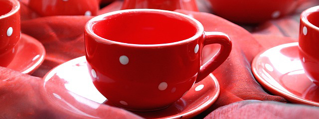

Restaurant Description
It turns out, there is a place like home. We invite you to join us any day of the week. Our menu is casual yet inventive, including gourmet dishes, bar fare, small plates and desserts - all available for late-night dining. Featuring inspired American fare and a full bar all nestled in a warm and welcoming atmosphere. Our crew is dedicated to serving our guests with the highest level of customer service.
We are committed to bringing you fresh, made from scratch food. We have produce delivered daily to ensure our dishes are fresh and full flavored. Many of our ingredients are locally grown and chosen for seasonality.
Veggies es bonus vobis, proinde vos postulo essum magis kohlrabi welsh onion daikon amaranth tatsoi tomatillo melon azuki bean garlic.